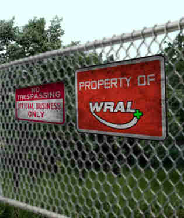

The Watersill Research for Artificial Life, abbreviated as WRAL, is a research center located in a remote forest on the outskirts of Watersill where many experiments are held with the goal to create artifical life. Formed in the mid-1980s, WRAL was originally focused on preserving life after death but later switched to creating artificial life in the early to mid-1990s due to the ethical implications of experimenting with biological material.
No civilians have stepped foot inside WRAL or have taken any photos of its architecture beyond the fence surrounding it, let alone inside. Those who trespass beyond the fence are immediately escorted out before they can see the building. Drones that fly over are shot down, and the pilot is eventually detained and executed. This means nobody knows what WRAL looks like, and likely never will.
Currently, none of the WRAL projects have been announced or revealed publicly due to their secrecy. Though, some of them have been leaked.
